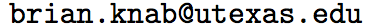

I am a graduate student studying philosophy (PhD) and statistics (MS) at the University of Texas at Austin.
My philosophical research is in formal epistemology and the philosophy of science. In statistics, I work on Bayesian spatial autoregressive models, and their application in epidemiology.
My email address is 
"Origins of Life Research Does Not Rest on a Mistake." Ergo. Forthcoming.
"Of Tornadoes and 747s: In Defense of Defeatism." (Draft available upon request.)
"How to be a Bayesian Curve Fitter."
Spatial Modelling of Infectious Disease in Texas